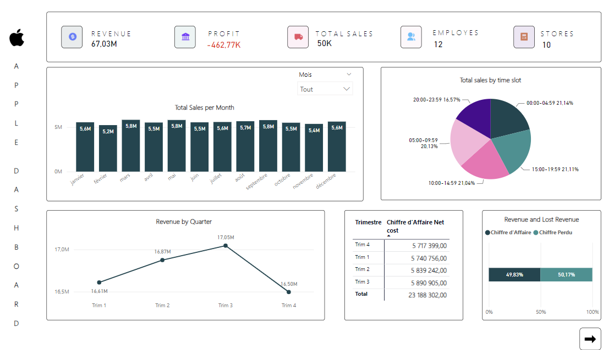
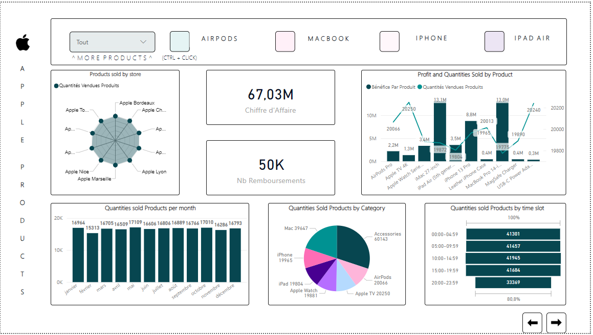
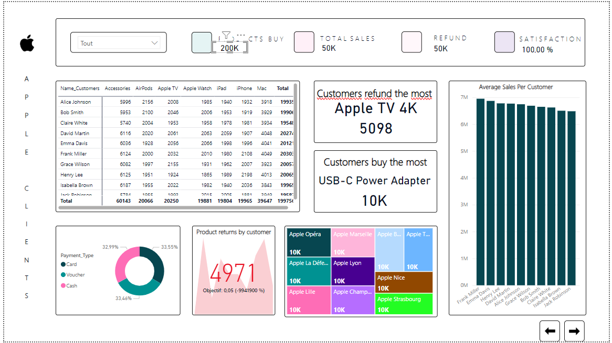

Analyse des ventes, performances produits et comportements clients à travers un dashboard interactif Power BI construit à partir d’un dataset Apple fictif.

Ce projet consistait à analyser un dataset fictif représentant les ventes de produits Apple afin de concevoir un dashboard décisionnel complet sous Power BI.
L’objectif était de fournir une vision claire des performances commerciales, des comportements clients et des tendances de ventes grâce à des KPI interactifs et des visualisations dynamiques.
Ce projet m’a permis de renforcer mes compétences en Business Intelligence, modélisation Power BI et data storytelling à travers une approche orientée décisionnel.


Discutons ensemble de vos besoins en analyse de données et dashboards.